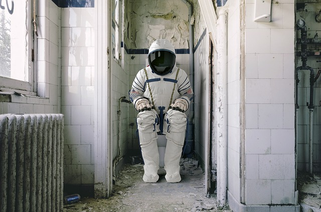

La constellation du Grand Chausson
Est un ensemble d'étoiles disposées de manière à ressembler à un chausson géant, perché là-haut dans l'espace pour garder les pieds froids des dieux. On dit que les divinités de l'Olympe avaient l'habitude d'y faire leurs emplettes pour des pantoufles confortables.
La constellation de la Cuvette Cosmique
Elle ressemble étrangement à une casserole renversée dans le ciel, laissant échapper un flot infini de spaghettis stellaires. Certains prétendent que c'est là que les extraterrestres viennent se restaurer en quête de nouilles galactiques.
La constellation du Téléphone en Rade
Cette constellation où les étoiles sont disposées en une forme étrangement familière de smartphone abandonné. Les anciens racontent que c'était le téléphone cosmique du dieu de la communication, mais qu'il l'a égaré lors d'une soirée interstellaire mouvementée..
Dans l'univers des constellations, tout est possible. C'est un tableau cosmique où l'absurdité règne en maître, où chaque étoile et chaque groupe d'étoiles racontent une histoire aussi inutile que merveilleuse, pour le simple plaisir de nous faire lever les yeux vers le ciel et nous émerveiller de la folie de l'univers.